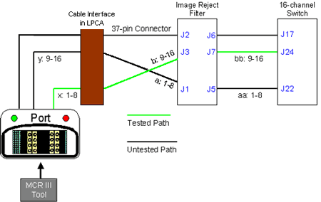

Illustration 11: Location of Cable Swapping

| NOTE: | This test will not run on 8 channel systems. |
Illustration 10: Hypertronics Cable Swap Test

Once the system is ready to perform this test, you will be asked to swap the two lower cables on the Service Hub (see Illustration 11). Once this test is complete, you may automatically proceed to the 8W8 Bottom test. Note the results, make the cable changes as instructed, and proceed.
Illustration 11: Location of Cable Swapping
| NOTE: | If this test passes, the MCR III Tool will automatically skip the 8W8 Top test. |